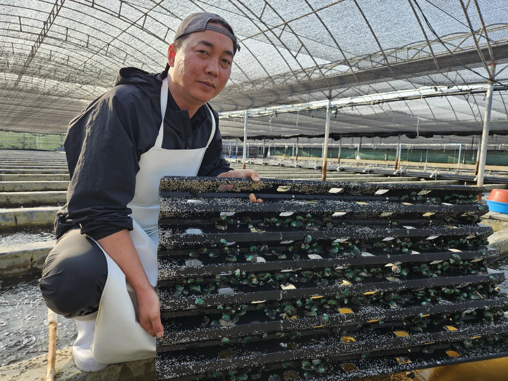
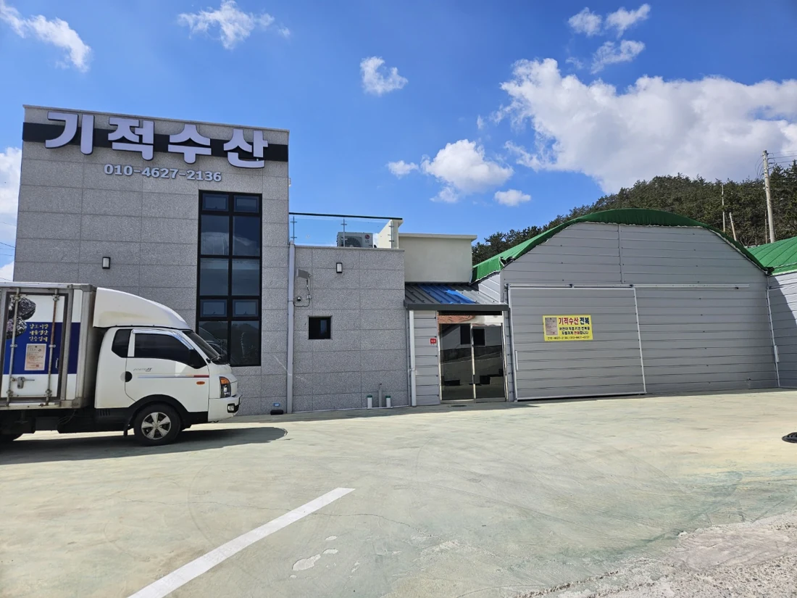

회사소개
진도 바다에서
4대째 이어온 수산업
어업회사법인 유한회사 기적수산
기적수산
원물 생산부터
가공·유통·수출까지
기적수산은 전복과 미역을 직접 양식해 왔습니다. 진도산 원물을 바탕으로 수산가공식품을 제조하고 국내외에 공급합니다.

주요 연혁
기적수산이 걸어온 길
- 기적수산 법인 설립
- 식품제조·가공 전용 공장 신축
- HACCP 인증
- 일본 활전복 직접 수출 개시
- 남도미향 인증
- 미국 H Mart 간접 수출
